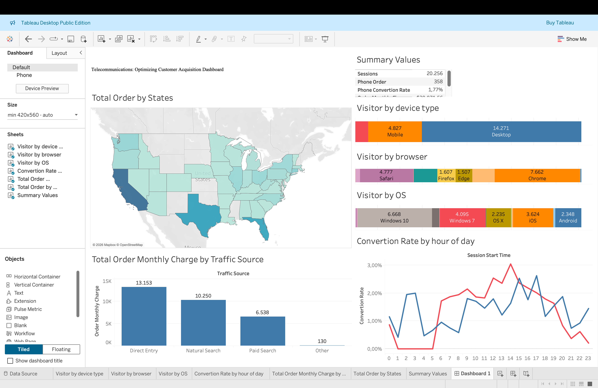

Red Ventures partners with a telecommunications company to optimize customer acquisition through two channels: an online purchasing system and a sales-agent-supported call center. The goal is to maximize conversions by analyzing customer behavior and directing each segment to the channel that best fits their preferences.

Objective: Optimize conversions by aligning users with the most effective channel (online vs. call center).
Key Insight: Most users enter directly → already familiar with the brand, high intent, and more likely to complete purchases independently.
Behavior Pattern:
•Desktop + Direct Traffic: Prefer seamless, self-service checkout → best suited for online purchasing.
•Organic (Search) + Mobile Users: In exploration stage, need more guidance → better directed to call center support.
Paid Search Performance: Strong in several regions → maintain and optimize by focusing on high-performing areas and refining messaging.
Strategy: Segment users based on behavior and intent to deliver a more personalized journey, reduce friction, and improve conversion rates.